Air Conditioning Systems · 34-04-61
Evaporator Core
Removal
-
Discharge the refrigerant into the garage exhaust system if the refrigerant system still contains some refrigerant. 2. Remove the air cleaner.
-
Remove the insulation at the expansion valve and the hose ends.
-
Remove the high and low pressure hoses at the evaporator core.
-
Remove the evaporator front cover and heat shield attaching screws (Fig. 35). Remove the front cover and heat shield. Use care when withdrawing the icing switch capillary tube from the evaporator core.
-
Remove the evaporator top cover from the evaporator core housing (Fig. 35).
-
Remove the top section from the evaporator housing (Fig. 36).
-
Remove the glove compartment door. Then, remove the six screws holding the glove compartment liner. Remove the liner through the glove compartment door.
-
Remove the evaporator core retaining nut from the right side of the plenum chamber by reaching through the glove compartment opening (Figs. 36 and 37).
-
Remove the evaporator core from the evaporator housing.
-
Remove the expansion valve from the evaporator core.
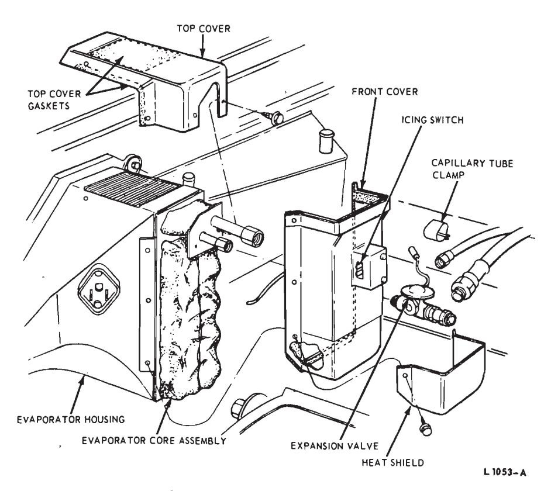
Fig. 35 — Evaporator Covers—Ford, Mercury and Meteor
Installation
-
Install the expansion valve on the evaporator core and fasten the sensing bulb to the low pressure pipe.
-
Position the evaporator core in the housing and install the retaining nut.
-
Replace the glove compartment liner and install the attaching screws. Position the glove compartment door in place and install the attaching screws.
-
Fabricate a gasket to replace the top section removed from the top of the evaporator housing (Fig. 36).
-
Position the front cover to evaporator housing and insert the capillary tube straight into the hole in the evaporator core (Fig. 35). No bends in the capillary tube are permissible.
-
Install the evaporator housing top cover.
-
Position the heat shield to the front cover and install the attaching screws.
-
Install the high and the low pressure hoses on the evaporator.
-
Install the insulation on the expansion valve and on the end fittings of the hoses.
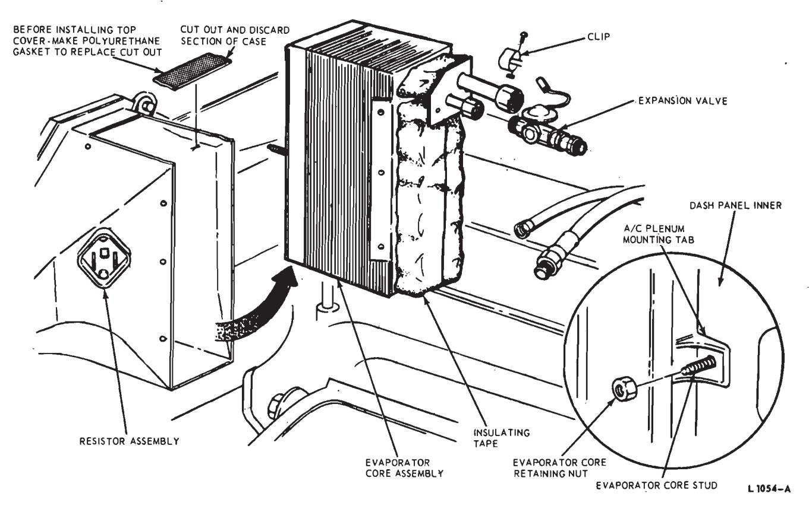
Fig. 36 — Evaporator Core Removal—Ford, Mercury and Meteor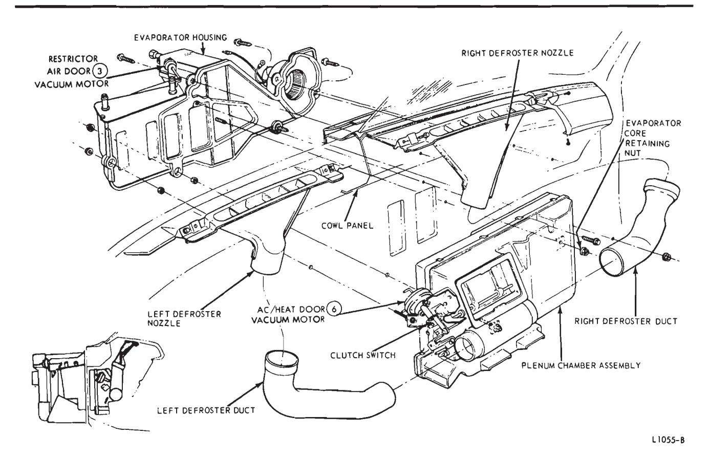
Fig. 37 — Heater-Air Conditioning Installation—Ford, Mercury and Meteor -
Leak test, evacuate and charge the system.
-
Install the air cleaner and testthe air conditioning system.
Expansion Valve
- Discharge the air conditioning system.
- Remove the insulation from the expansion valve and hose ends.
- Loosen the clamp screw retaining the temperature sensing bulb to the evaporator pipe. Pull the bulb from the clamp.
- Remove the high pressure hose from the expansion valve and remove the valve from the evaporator.
- Connect the new expansion valve to the evaporator, clean the suction line and bulb clamp to assure good contact, slide the temperature sensing bulb in the clamp and tighten the mounting screw. An aluminum evaporator with an aluminum suction tube must have an aluminum bulb clamp and tinned expansion valve capillary bulb.
- Connect the high pressure hose to the expansion valve and leak test the valve connections.
- Install the insulation on the expansion valve and hose ends.
- Evacuate and charge the system.
Thermostatic (ICING) Switch
Removal
- Disconnect the thermostatic (icing) switch and resistor (Fig. 35). Position the wire harness to one side.
- Remove the six screws retaining the evaporator core cover and heat shield. Pull the sensing tube from the evaporator core. Remove the front cover with the switch (Fig. 35).
- Remove the two screws retaining the thermostatic (icing) switch to the front cover and remove the switch.
Installation
- Position the new switch in place and install the two retaining screws.
- Insert the sensing tube straight into the hole in the evaporator core (Fig. 35). No bends in the sensing tube are permissible.
- Install the heat shield and front evaporator cover.
- Connect the multiple connectors to the air conditioning switch and resistor assembly on the side of the evaporator housing.
Defroster Nozzles—Ford, Mercury and Meteor
- Remove the instrument panel pad (Group 47).
- Loosen the instrument panel brace to remove the left defroster nozzle.
- Remove two defroster nozzle attaching screws and lift the nozzle up and out of the defroster duct (Fig. 37).
- Position the nozzle to the defroster duct and dash panel, and install the two attaching screws.
- Tighten the instrument panel brace (if loosened), and install the instrument panel pad.
Heater Core—Ford, Mercury and Meteor
-
Drain the cooling system.
-
Remove the carburetor air cleaner.
-
Remove two screws attaching the vacuum manifold to the dash panel above the heater core. Disconnect the vacuum hoses as necessary and position the manifold away from the heater core cover.
-
Disconnect the heater hoses from the heater core.
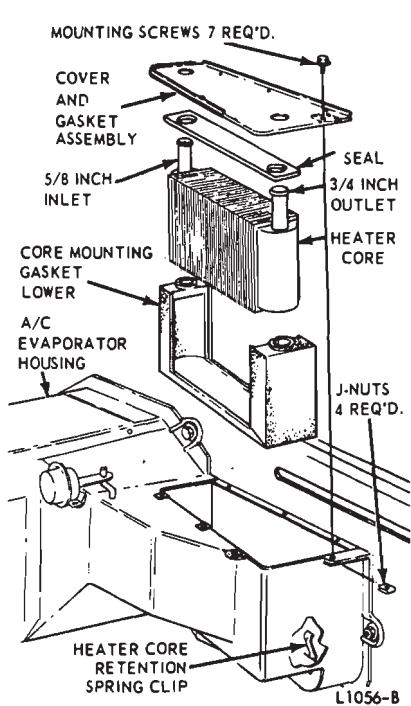
Fig. 38 — Heater Core Removal—Ford, Mercury and Meteor -
Remove seven heater core cover attaching screws and remove the core cover (Fig. 38).
-
Remove the heater core from the housing.
-
Remove the pad from the heater core.
Installation
- Install the pad on the heater
- Position the heater core in the housing and install the heater core cover.
- Connect the heater hoses to the heater core.
- Install the vacuum manifold and connect the vacuum hoses to the manifold.
- Fill the cooling system and install the carburetor air cleaner.
Blower and Motor
Refer to the heater blower and motor procedure in Part 34-03.
Blower Switch
Refer to the blower switch procedure in Part 34-03.
Blower Resistor
The blower motor resistor is located in the front side of the evaporator
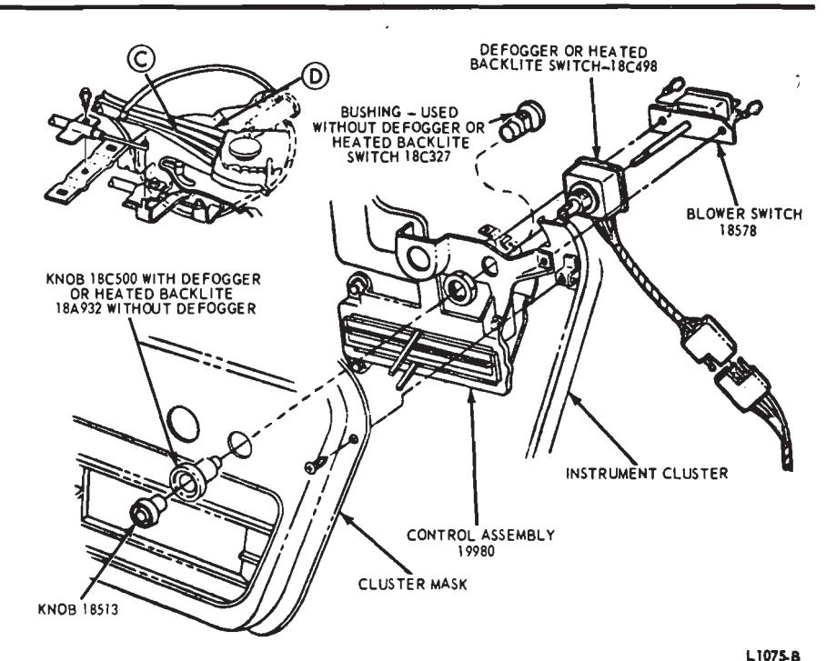
Fig. 39 — Heater-A/C Control Assembly—Ford and Meteor
…
housing. To replace the resistor, disconnect the wires at the resistor and remove the two attaching plastic rivets
Control Assembly—Ford and Meteor
Removal
- Disconnect the battery ground cable.
- Remove the instrument panel pad (Group 47).
- Remove the instrument cluster mask (Group 33).
- Disconnect the wire plug connector from the blower switch.
- Disconnect the defogger switch wires at the multiple connector if equipped with a defogger (Fig. 39).
- Disconnect the Bowden cables from the control assembly. Disconnect the vacuum hoses from the control assembly.
- Disconnect the illumination light wire at the connector.
- Remove three control assembly attaching screws, and pull the control assembly out from the front of the instrument panel.
- If the control assembly is to be replaced, transfer the blower switch to the new control assembly.
Installation
- Position the control assembly to the instrument panel and install the three attaching screws.
- Connect the illumination light wire, blower and delogger or heated backlite switch wires.
- Connect the Bowden cables to the control assembly. Connect the vacuum hoses to the control assembly.
- Install the instrument cluster mask (Group 33).
- Install the instrument panel pad (Group 47), and connect the battery cable.
Control Assembly—Mercury
Removal
- Disconnect the battery ground cable.
- Pull the blower knob and the defogger knob off the switches.
- Remove the left air vent knob and the brake release knob. Remove the cable retaining nuts and lower both cables.
- Remove the screw retaining the left A/C duct to the instrument panel, and position the duct back.
- Remove two screws attaching the control assembly to the instrument panel. Pull the control away from the instrument panel.
- Disconnect the wire plug connectors from the blower switch and the defogger or heated backlite switch. Disconnect the illumination light wire. 7. Disconnect the Bowden cables and vacuum hoses from the control assembly (Fig. 40), and remove the control assembly.
Installation
- Connect the Bowden cables, vacuum hoses, illumination light wire and the plug connectors to the control assembly.
- Position the control assembly to the instrument panel and install the two attaching screws.
- Install the blower and defogger or heated backlite switch knobs.
- Move the left A/C duct into place and install the retaining screw.
- Install the left air vent and brake release cables and knobs.
- Connect the battery ground cable.
Temperature Blend Door (5) Control Cable—Ford, Mercury and Meteor
Removal
- Disconnect the battery ground cable.
- Remove the instrument panel pad (Group 47).
- Remove the glove compartment liner.
- Disconnect the wires from the thermostatic switch and the blower motor resistor, and position the wires to one side.
- Remove six screws attaching the evaporator core front cover and heat shield to the evaporator housing. Pull the icing switch sensing tube from the evaporator core, and remove the evaporator front cover (Fig. 35).
- Remove the evaporator core top cover.
- Disconnect the control cable from the heater-A/C control assembly (Fig. 40).
- Remove the nut and washer retaining the evaporator core to the dash panel (Fig. 37) under the instrument panel.
- Remove the evaporator core from the evaporator housing.
- Working through the evaporator core opening, remove the clip retaining the control cable to the temperature blend door (5) arm.
- Remove the screw (located under the instrument panel) retaining the temperature blend door (5) control cable to the plenum chamber. Pull the cable out of the plenum chamber and remove the cable.
Installation
- Insert the control cable into the plenum chamber and install the retaining screw.
- Connect the cable to the temperature blend door (5) arm and install the retaining clip.
- Position the evaporator core in the evaporator housing, and install - the washer and nut retaining the evaporator core to the dash panel (under instrument panel, Fig. 37).
- Install the glove compartment liner.
- Connect the temperature blend door (5) control cable to the heater-A/C control assembly (Figs. 39 and 40).
- Install the instrument panel pad (Group 18).
- Install the evaporator core top cover.
- Insert the icing switch sensing tube into the evaporator core, and install the front cover and heat shield.
- Connect the wires to the thermostatic switch and blower motor resistor.
- Connect the battery ground cable and adjust the temperature blend door (5) control cable at the turnbuckle.
Heat/defrost Door (7) Control Cable—Ford, Mercury and Meteor
Refer to Part 34-03 for the heat-/defrost door (7) control cable Removal and Installation procedure.
Restrictor Air Door (3) Vacuum Motor—Ford, Mercury and Meteor
- Disconnect the motor link clip at the AC/heat door (6) lever.
- Disconnect the vacuum hose at the motor and remove the retaining screws at the front of the evaporator case. Remove the motor.
- Position the motor and fasten the two retaining screws to the front of the evaporator case.
- Connect the link clip to the AC/heat door (6) lever and connect the vacuum hose to the motor.
Outside Air Door (1) Vacuum Motor—Ford, Mercury and Meteor
Removal
-
Remove the wiper arm and blade assemblies (Fig. 41). 2. Remove the cowl top grille.
-
Remove the screws retaining the motor to the bracket.
-
Mark the motor arm showing the proper adjustment and remove the adjusting screw (Fig. 41).
-
Disconnect the vacuum hose and remove the motor.
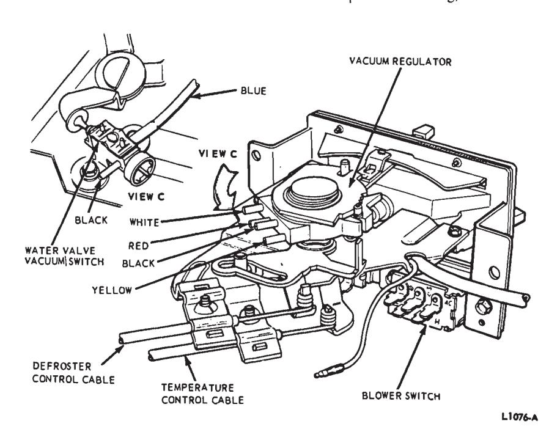
Fig. 40 — Heater-A/C Control Assembly—Mercury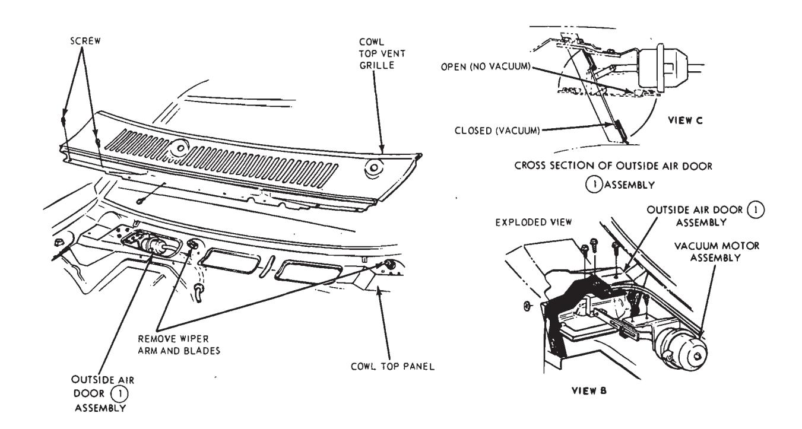
Fig. 41 — Outside Air Door (1) Motor—Ford, Mercury and Meteor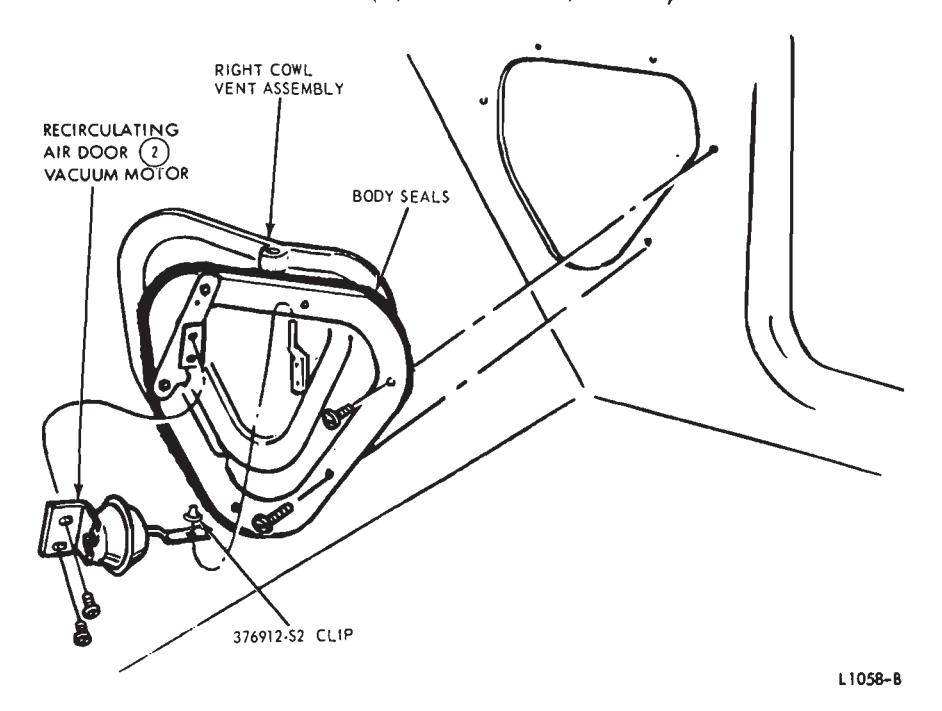
Fig. 42 — Recirculating Air Door (2) Vacuum Motor—Ford, Mercury and Meteor
Installation
- Install adjustment arm screw to the previous location and connect the vacuum hose.
- Position the motor to the bracket and install the retaining screws (Fig. 41). 3. Install the cowl top grille. 4. Install the windshield wiper arms and blade assemblies.
Recirculating Air Door (2) Vacuum Motor
Remove the right side cowl trim panel. Then, remove the vacuum motor (Fig. 42).
Ac/heat Door (6) Vacuum Motor
- Remove the clip retaining the motor arm in the heat door lever.
- Disconnect the vacuum hose from the vacuum motor.
- Remove the two motor attaching screws and remove the motor.
- Position the motor to the heat door lever and the evaporator housing.
- Install the two attaching screws and the door lever clip.
- Connect the vacuum hose to the motor.
Restrictor Air Door (3) Vacuum Motor
The restrictor air door (3) vacuum motor is attached to the top of the evaporator housing (Fig. 37). To remove the motor, remove the attaching screws and disconnect the vacuum
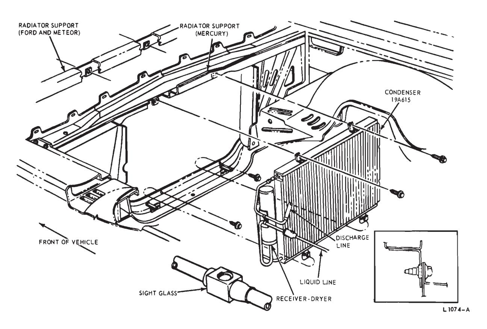
Fig. 43 — Condenser and Receiver Tank—Ford, Mercury and Meteor
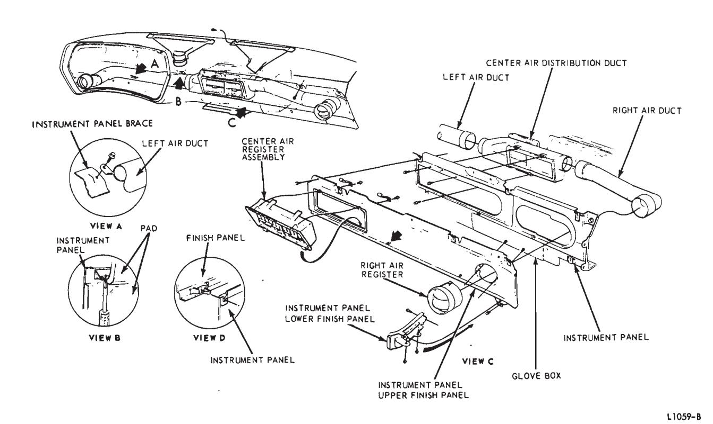
Fig. 44 — Air Ducts and Registers—Ford and Meteor
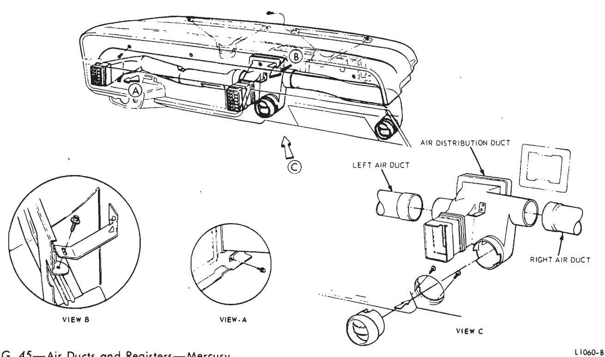
Fig. 45 — Air Ducts and Registers—Mercury
hose. Then, disengage the motor arm from the heater air door crank.
Ac/heat Door (6) Vacuum Motor—Ford, Mercury and METEOR
Removal
- Disconnect the battery ground cable.
- Remove the instrument panel pad (Group 47).
- Remove the left defroster nozzle and defroster duct.
- Remove the vacuum motor arm retaining clip.
- Disconnect the vacuum hoses from the vacuum motor.
- Remove two vacuum motor retaining nuts and remove the vacuum motor (Fig. 37).
Installation
- Connect the hoses to the vacuum motor, and position the motor to the mounting bracket. Install the two retaining nuts.
- Install the vacuum motor arm retaining clip.
- Install the left defroster duct and defroster nozzle.
- Install the instrument panel pad (Group 47), and connect the battery cable.
Heater Water Valve (4) Ford, Mercury and Meteor
Removal
- Drain the cooling system.
- Remove the carburetor cleaner.
- Disconnect two water hoses and one vacuum hose from the heater water valve (4) and remove the valve.
Installation
- Connect the water and vacuum hoses to the heater water valve (4). 2. Fill the cooling system.
- Install the carburetor air clean-
Clutch Switch
Refer to the AC/Heat Door (6) ‘Vacuum Motor procedure for access, as the clutch switch is attached to the same mounting bracket as the vacuum motor (Fig. 37).
Condenser and Receiver Tank
Discharge the air conditioner system and drain the cooling system.
Remove the radiator and disconnect the refrigerant lines. Then, remove the condenser attaching screws and remove the condenser and receiver tank through the radiator opening (Fig. 43).
Instrument Panel REGISTERS—Ford And Meteor
Right and Center Registers
Remove the glove compartment liner and the instrument panel pad (Group 47). Disconnect the right air duct from the air register and remove the instrument panel upper finish panel and lower finish panel (Fig. 44). Remove the registers from the upper finish panel (Fig. 44).
Left Register
To remove the left register, remove the instrument panel pad and the instrument cluster mask. Then, remove two screws attaching the register to the cluster (Fig. 44). To remove the left air duct, remove the instrument panel brace and the air duct retaining screw.
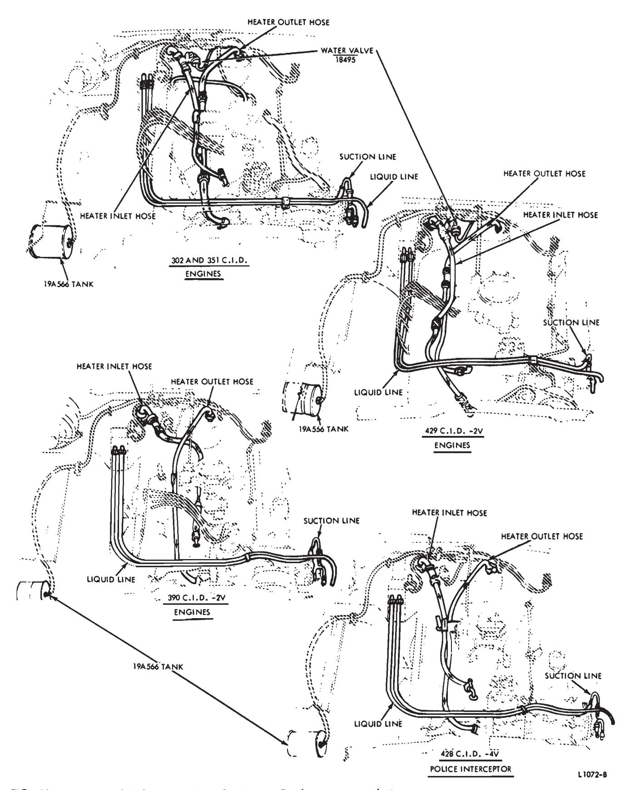
Fig. 46 — Heater and Refrigerant Hose Routings—Ford, Mercury and Meteor
Instrument Panel Registers—Mercury
Right and Right Center Registers
Remove the glove compartment liner and disconnect the air duct from the register (Fig. 45). Then, remove the two register attaching screws and pull the register from the instrument panel.
Left and Left Center Registers
The left and left center registers are riveted into the instrument panel and cannot be removed.
Heater and Refrigerant Hoses
The heater-air conditioner hose routings are shown in Fig. 46.